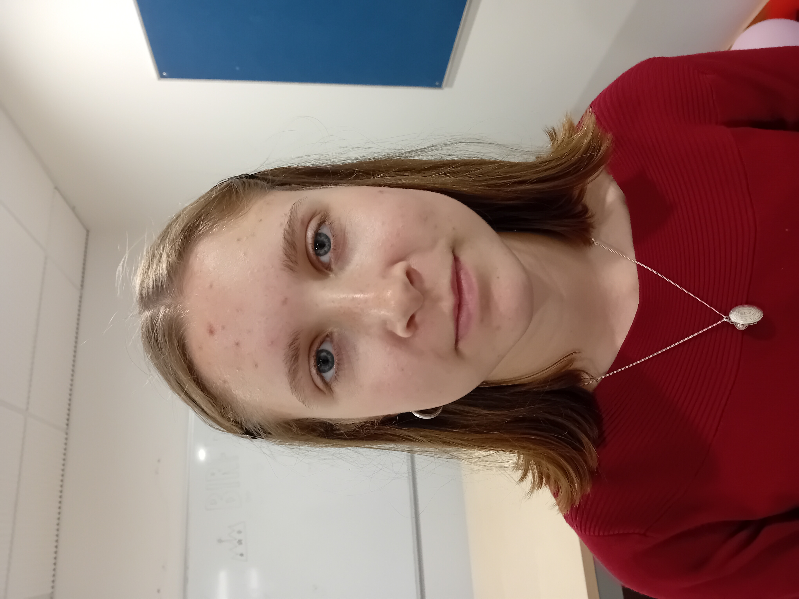

Photogrammetry vs AI-Generated 3D Models
Introduction
The aim of this test will be to compare the results of traditional photogrammetry with the results of Tripo, a generative AI based program that produces a 3D model based off an image reference.
Plan
To conduct this test, my plan was very simply to produce two separate 3d Models, one using traditional photogrammetry in the user-friendly app Polycam, and the other in Tripo. I will then produce a turntable render of each, with which we can compare the quality of the two end products.
One of the most challenging things to produce a 3D model of with any methodology is a human face. This is because it both contains an immense amount of detail, and is something that other human beings are well accustomed to looking at, meaning that we as a species are hypersensitive to any peculiarities and inaccuracies. For this reason, I decided that the "object" I was going to scan was a human face.
Expectations / Hypothesis
It is my expectation that the traditional photogrammetry will be in general less polished than the AI generated model, with a fairly uniform level of inaccuracy and imperfection, while the AI generated model will be smoother, but less accurate to the source material because it will be based off of a single image, meaning that it must generate features that it cannot discern from the reference image.
Because of this, I anticipate that I will conclude that both have pro's and con's, and that AI generated models will be the better way forward in scenarios where accuracy to the reference is less important, while traditional photogrammetry, with it's strict adherence to the features identified in the images it generates the model from, will remain the most effective in situations where real-world accuracy is more important.
Turntables
Both models were rendered as a turntable from the same starting angle, so the two end products sit next to each other for a direct look.
Traditional photogrammetry
122 reference photos, reconstructed in Polycam.
AI generated model
A single reference photo, generated in Tripo.

Reference image
Zailey, the subject photographed for both models: 122 angles for the Polycam scan, and this single frame as Tripo's only reference.
Photogrammetry_Channels folder placed
next to this HTML file, expecting Traditional_Photogrammetry_Demo.mp4,
tripo-showcase-9cad51c5-aada-4e87-9c59-d715281ab0ae.mp4, and
Zailey_Reference.jpg. If your exports use different extensions, update the
src attributes on the two <video> elements and the reference
<img> directly.
Results
Overall, I feel that Tripo performed worse than I anticipated here. It has gotten the proportions of Zailey's (the person who's photograph I used as the reference for both models) face wrong, exaggerating features such as the eye's and nose, and giving the end result a slightly cartoonish look. I suspect that Tripo's model edges towards creating more stylised models, and so even when given a reference of a real person, it adds some of this "cartoonish" quality. This may be deliberate on the part of the developers, as it is an effective strategy to avoid the pitfall of the "uncanny valley", where character's that look almost, but not quite human, are perceived as looking weird and creepy, and so lead to a more negative reading than those that err more towards a stylised, distinctly non-human look.
The traditional photogrammetry on the other hand performed exactly as I expected it to, creating a generally accurate model of Zailey with a nearly uniform 'lumpiness' coming from imperfections in the model. It is worth noting that one thing I had not properly accounted for is that these imperfections are not totally uniform, as the face is actually more accurate to Zailey's real world face than other parts of the model. This is a result of the fact that the set of photo's I took focused more heavily on her face, as the most important part of the model, and when the program is giving more reference material to work with, it generates a higher quality end result.
It is also worth noting that this test is in a way unfair. Tripo is working off a single reference image, while Polycam is creating it's model from 122 photos. This is the nature of the tools as the currently stand. Tripo (at least the free tier that I was using) can only use one reference image. However, there is no theoretical reason why a generative AI tool could not utilise multiple images, and I believe that a fairer test, where an AI tool was also able to take advantage of 122 reference images, would produce a fairer test and likely a higher quality AI generated result.
Polycam's 122-photo scan was the more accurate model of the two, but Tripo was working from a single reference image by the limits of its free tier, not by design.